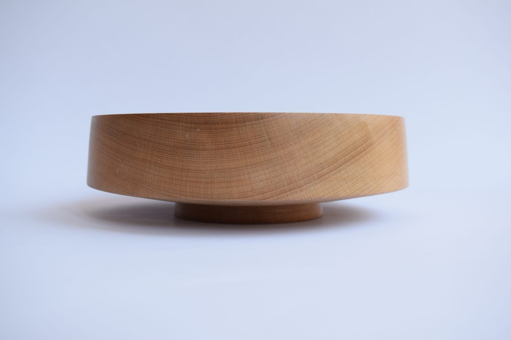
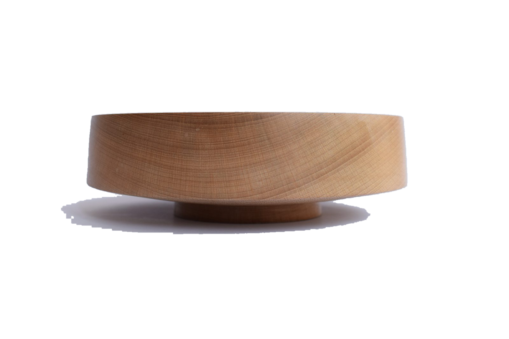

I'm Torin. I turn everything from bowls to jewellery on my lathe, alongside various other woodworking projects in my workshop in Fife. All wood is sustainably sourced where possible.
Four collections. Pick one to see the pieces.
Most of my work happens on the lathe, however I also enjoy working with other tools and techniques to create unique pieces.
A lot of the pieces are one-offs made for a functional purpose. Some are commissioned, others are created for personal use or as gifts.
Most pieces are one-offs, but you can see what I currently have available in my Etsy shop. I also take commissions, and I'm always happy to talk.